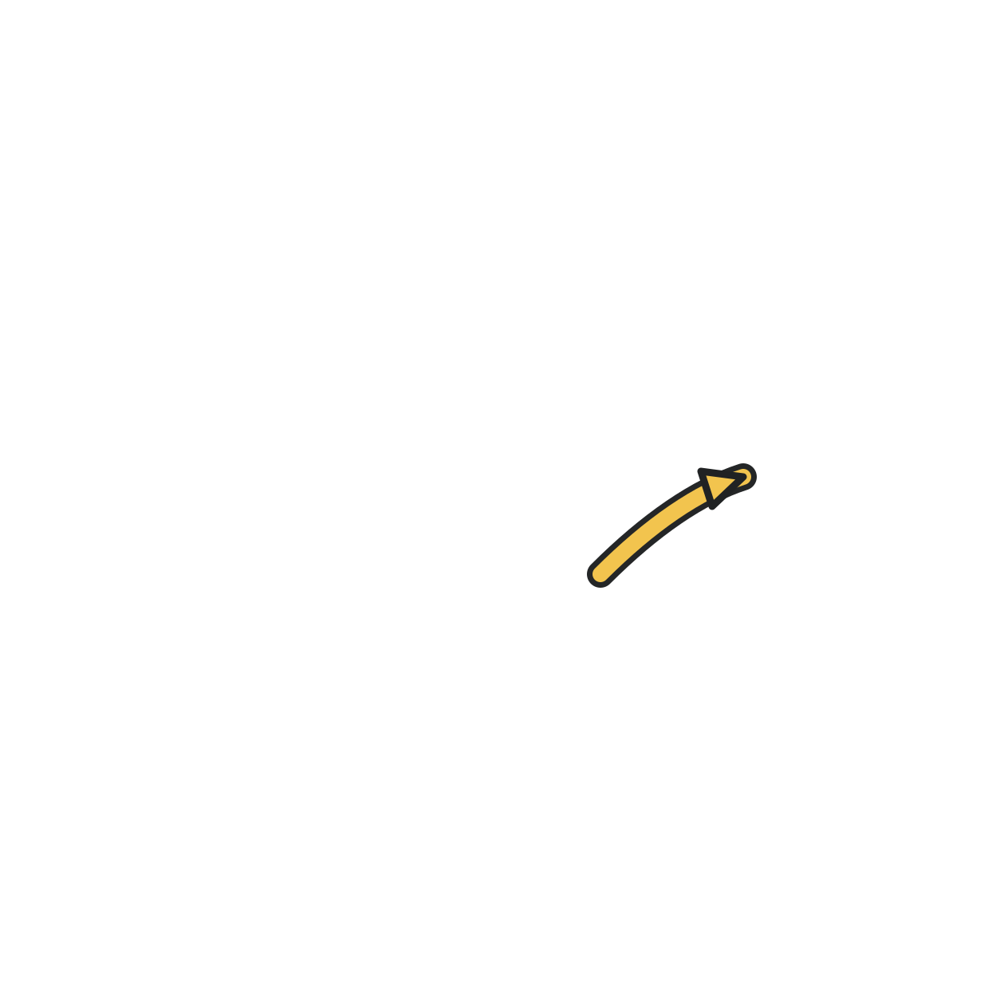
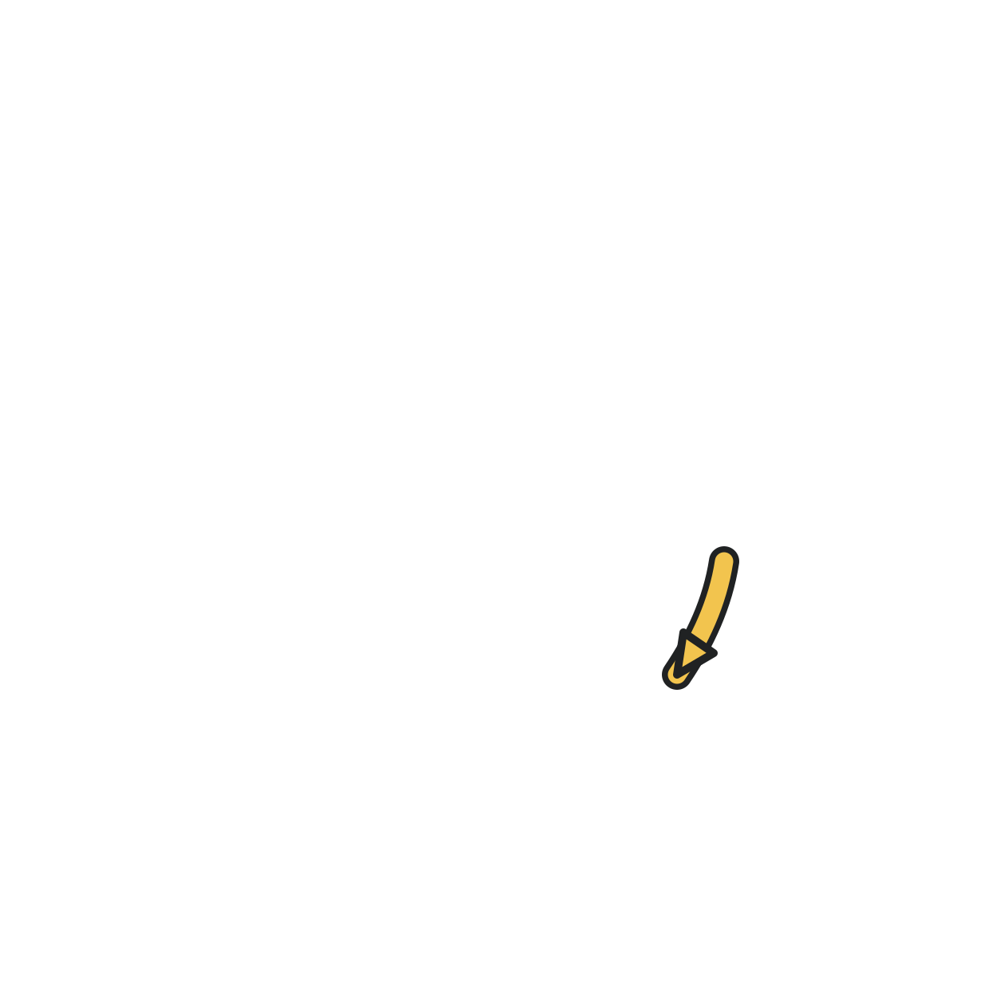
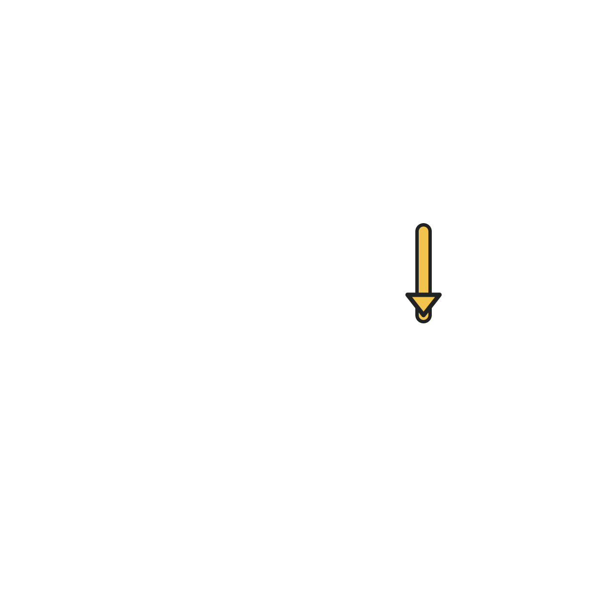

Wave 01 · Spatial instructional overlays
Clean base asset plus optional static-position overlay. The overlay uses no motion trails.



Clean base asset plus optional static-position overlay. The overlay uses no motion trails.


